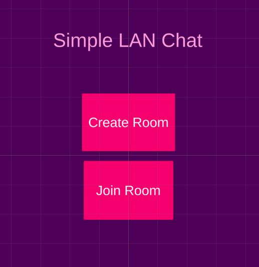

Eller's Algorithm [July, 2020]
Last 2 months I was so wrapped up with my work. Anyways, among the most efficient maze generation algorithms out there,
it is considered to be one of the bests, that's why I wanted to make from ground up. Thanks to Jamis Buck for his awesome blog which helped me a lot understanding the concepts.
Click here to see demo!
Random Maze Generation [April, 2020]
Learned about various maze generation algorithms. It was part of a coding challenge I faced. I did the whole demo in ~4.5 hours.
(Maze Generation with single entry-single exit + shortest Path-finding A*). I felt so overwhelmed and nervous at first, but slowly I regained momentum and
finished the project. I wish I could finish it within 3 hours, in my defense, I am not used to with this kind of challenges unfortunately. However
Click here to see demo!
Dependency Inversion ZENJECT [March, 2020]
Here I learned about dependency injection, SOLID principles and an
amazing DI library called Extenject(formally known as ZENJECT). Thanks to infalliable code and a pretty good
documentation of Zenject in github. I learned a lot about DI programming patterns and fell in love with it.
Simple Procedural Mesh Generation based game [January, 2020]
Here I made a game using the things I learned from Mesh Generation lessons from Freya
Holmer's videos. Most difficult part was mesh-pooling.
Click here to see demo!
Procedural Wave Mesh Generation [December, 2019]
I am following Freya Holmer's youtube channel, I learned so much from her channel
about procedural mesh generation. This is just a video demo of the project. I will
upload the github link once I complete the basic game play I have in mind.
Click here to see demo!
Ez Audio Manager [November, 2019]
This library turns all your audio files into C-Sharp Enums
in a scriptable object. This is targeted towards casual games which has a low number of sound assets.
Full project on github is given, click above image to browse.
Click here to see demo!

LAN Chat w/ Raw C# Socket [July, 2019]
An interesting study on raw c# socket programming. Wanted to learn the very basics of
Socket networking. Learned a lot in this study.
Click here to see demo!

Pathfinding (A* vs Dijkstra) [August, 2018]
Wanted to visualize the difference between these two algorithms. So i made this.
Thanks to quill18 & Sebastian Lague. I learned a lot from there tutorial videos
available on youtube.
Click here to see demo!
Mukticamp [July, 2017]
I was part of an excellent team with this project. It was a very ambitious project
right from the start.
Its a strategy + RPG game made for android, targeted towards Bangladesh people
because its based on our Liberation War of 1971.
I have given the link of the project on playstore. I worked on various things in
this project like UI,
3rd party library integration, Optimization, game-play features etc. As I was
included from the very start,
I often had to play different roles to make the project work.
This project started on late 2016 and lasted for about 18-20 months.
I learned a lot during this time, huge thanks to my mentor Arifur Rahman.

Basket2D [April, 2016]
Clone of Facebook's Messenger basket ball game. Done very early on my game dev
journey!

Color Box [March, 2016]
Hyper casual game made very early on my game developer
journey. Simple game with lots of room for improvement.
Strategy/RPG Ongoing prototype [2017]
I grew up playing Strategy games like commandos/desparados.
Always wanted to prototype a similar thing. This is a ***very*** early try on that. I will continue it
once I have some good amount of free time in my hand.